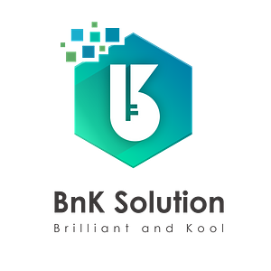

Trung Tran (Leo)
I move data at scale — reliably.
Senior Cloud Data Engineer based in Vietnam. I architect and build high-performance data platforms, lakehouses, and streaming systems on AWS and Azure — from raw ingestion to analytics that drive business decisions.
About Me
Hello! I'm Trung, a Senior Cloud Data Engineer based in Vietnam. My work lives where infrastructure meets insight: designing the platforms that turn raw, messy data into reliable, queryable truth.
Over the past five years I've led cloud migrations for banking and healthcare, architected streaming systems on Kafka, and built lakehouses on Databricks, Iceberg, and Delta Lake — always with an eye on scalability, cost, and governance.
Off the clock, you'll find me playing football, exploring new technology, and mentoring the next generation of engineers.
Technical Skills
Languages
- Python
- SQL
- Bash
- Scala (Spark)
Cloud Platforms
- AWS (Glue, S3, MSK, EKS)
- Azure (Data Factory, Synapse)
- Databricks
Big Data
- Apache Spark / PySpark
- Kafka / Debezium
- Iceberg / Delta Lake
- Trino
DevOps
- Docker / Kubernetes
- Helm
- Git & CI/CD
- Linux
Where I've Worked
Data Engineer @ Vietnam Silicon
May 2025 — Present
- Designed and implemented the core data platform architecture for an agriculture project using AWS (S3, Glue, Iceberg, Trino, EKS).
- Built and delivered ETL pipelines with Spark/PySpark, ensuring reliable data ingestion and transformation.
- Applied data security and governance practices (IAM, encryption, metadata/catalog management).
- Deployed and managed data services on Kubernetes (EKS), including Helm-based deployments and CI/CD.
- Mentor and Project Leader for the company's internship program; developed an automated CV screening product.
Data Lead @ EONSR (Part-time)
May 2025 — September 2025
- Led and coordinated data team resources to ensure timely and high-quality project delivery.
- Oversaw implementation of analytics and data solutions using Google Analytics 4 (GA4) and BigQuery.
- Developed interactive dashboards and business reports in Looker Studio for Marketing and Business teams.
- Integrated and analyzed advertising data from Google Ads, Meta, and TikTok to optimize campaign performance.
Data Engineer @ Renova Cloud
May 2023 — May 2025
- Led cloud migration projects from on-premise infrastructure to AWS, focusing on scalability and cost optimization.
- Designed and documented cloud architecture, providing strategic consultation and AWS best practices.
- Built end-to-end data platforms covering ingestion, processing, storage, and analytics.
- Architected and delivered streaming data systems using Apache Kafka and AWS MSK.
- Managed and consulted on delivery of data lakes and warehouse architectures for Banking and Healthcare.

Data Engineer @ BnK Solution
September 2022 — April 2023
- Designed and developed data processing platforms and architectures using Databricks.
- Implemented Lakehouse architecture using Delta Tables.
- Built data pipelines for reading CSV files using NiFi and transformed raw data using Scala.
- Processed streaming data using Kafka, Debezium, and Google Cloud Storage.
Data Engineer @ TechX Corporation
July 2021 — September 2022
- Designed and developed data processing platforms using AWS native services.
- Built efficient data transformation scripts using Python and PySpark for analytics and ML workflows.
- Implemented scalable pipelines leveraging AWS Glue Workflows and Step Functions.
- Created operational dashboards using AWS QuickSight and Power BI.
Achievements & Certifications
AWS Certified Database
SpecialtyAWS Certified Data Analytics
SpecialtyAWS Certified Data Engineer
AssociateAWS Certified Solutions Architect
AssociateAWS Certified AI
PractitionerDatadog Fundamentals
CertifiedKey Recognition
- 1st Place — Design & Workshop Challenges, VN Partner Special Force Bootcamp 2023
- Winner — Microservice Challenge, Viet Nam Partner Special Force Bootcamp 2023
- Winner — HCMUTE Scholarship (2020)
- Third Prize — Mastering IT academic competition (2019)
- Paper — AI-Driven Deep Learning Approach for Pan-Cancer Immune Profiling
Get In Touch
I'm currently open to new opportunities as a Senior Data Engineer. Whether you have a question, a project, or just want to say hi — my inbox is always open.
Say Hello